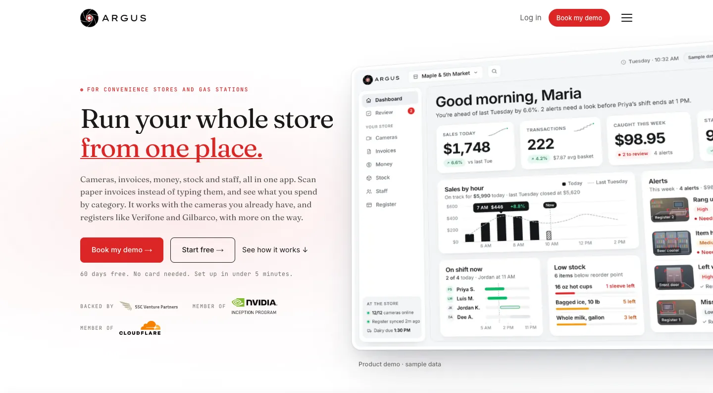

Cofounder and lead engineerEnded 2026
Argus
One app to run a convenience store or gas station, starting with AI cameras that spot theft.
- useargus.co
- Docs
- Private repo

Stores lose stock to shrink, and cameras only record it.
Shrink is the stock a store loses to theft and loss. Convenience stores and gas stations feel it hardest because their margins are thin.
Most of these stores already have cameras. Cameras help after the fact. Nobody can watch every feed all day, so footage mostly gets looked at once something is already gone.
The store owner also runs on a pile of separate tools: a register system, a camera recorder, invoices on paper, stock counts in a notebook. Nothing puts those together, so nobody can see, for example, what was paid for against what left the building.
Cameras in, one risk score per person out.
We started with theft because it is the loss owners feel most, and because the cameras were already on the wall. Then we grew the product toward the whole store day: invoices, money, stock, staff and the register.
Watch the cameras
A desktop app on a computer the store already has finds the camera recorder and sends its feeds to Argus. No new cameras, nothing to mount. Setup was meant to take under 5 minutes.
Track people and pose
The AI finds each person and follows how their body moves, together with the visual signals around them.
One risk score
Everything is combined into a single score for each person. Staff see one number and a short video clip, not a wall of video.
Around the AI we built the store dashboard where owners see alerts, stock, money and staff, an in-store AI board for stores with no back-office computer, and the marketing site. The AI itself is Argus One.
How it worked, from camera to dashboard.
The streaming agent sends each camera feed to the AI service. The service runs person detection, pose tracking and the visual model, then combines them into the score. Results are saved to the database and, past a threshold, turned into an alert. The dashboard and the marketing site sit on top, with Clerk for sign-in and Stripe for billing.
- Streaming agentSends each store’s camera feeds to Argus.
- FastAPI and AWS LambdaThe API and the AI calls, 200+ a minute.
- YOLOv8 and EVA-CLIPPeople and pose tracking, plus visual signals from the video.
- PostgresThe database behind the app.
- Next.js and NodeNext.js for the marketing site, Node and Express behind the dashboard.
- Clerk and StripeSign-in, and billing for stores.
The AI ran as its own service, apart from the business app. A heavy AI workload can then grow without touching the dashboard, and if the AI service falls over the dashboard stays up.
What it reached
- $1Mvaluation on the first round
- 10+stores, including enterprise clients
- 50+camera feeds
- 200+AI calls a minute
- 92%model accuracy
- 15 to 25%less theft and loss
We raised a first round at a $1M valuation and got into a startup accelerator. Argus ran in 10+ stores, including enterprise clients, with 4 pilot clients.
What I owned
- Cofounded Argus and led engineering.
- Product strategy: deciding what to build first, starting with theft detection.
- Pricing for stores.
- Delivery: getting the product running in real stores.
- Raised the first round at a $1M valuation and got us into an accelerator.
What I learned
Running a product from pricing to delivery: a model that scores well on a test set still has to survive a real store, a real recorder and a real manager who has a line at the register.
Being plain about what the AI cannot do. The Argus One notes list what it does not detect, such as an item actually going into a bag. Writing that down early kept the product honest with stores.
Building with a small team, where everyone shipped something real into a store.
2025 to 2026
- First code for the AI.
- Started the store dashboard.
- Built the first marketing site.
- Argus One, the theft-detection AI, took shape.
- Status page, ops console and audit logging.
- Docs site at docs.useargus.co.
- Argus ended.
Argus ended in 2026.
The owner ended it in 2026. I am not going to guess at reasons here.
The public pieces are still up: useargus.co, the docs and the status page.
Notable projects

Argus Dashboard
One screen for running a store: loss prevention, stock, money and staff.

Argus One
The theft-detection AI. It watched live store cameras, tracked body pose and gave each person one risk score.

In-store AI board
A small box for stores with no back-office computer, built around the NanoPi R76S.

useargus.co
The Argus marketing site, its docs and its status page.